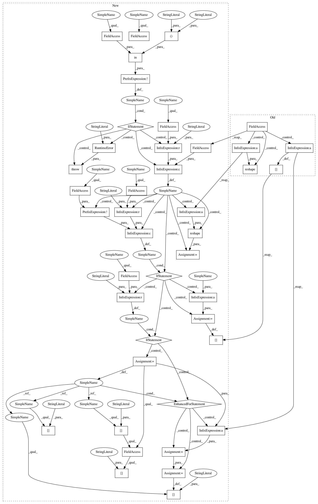

dce008fdb854987bf596f084024df3117a4c06ec,kymatio/scattering1d/frontend/tensorflow_frontend.py,ScatteringTensorFlow1D,scattering,#ScatteringTensorFlow1D#,20
Before Change
pad_right=self.pad_right, ind_start=self.ind_start, ind_end=self.ind_end,
oversampling=self.oversampling, vectorize=self.vectorize, size_scattering=size_scattering)
if self.vectorize:
scattering_shape = tuple(S.shape[-2:])
S = tf.reshape(S, batch_shape + scattering_shape)
else:
for k, v in S.items():
scattering_shape = tuple(v.shape[-2:])
S[k] = tf.reshape(v, batch_shape + scattering_shape)
return S
After Change
"Input tensor x should have at least one axis, got {}".format(
len(x.shape)))
if not self.out_type in ("array", "list"):
raise RuntimeError("The out_type must be one of "array" or "list".")
batch_shape = tuple(x.shape[:-1])
signal_shape = tuple(x.shape[-1:])
x = tf.reshape(x, (-1, 1) + signal_shape)
// get the arguments before calling the scattering
// treat the arguments
if self.vectorize:
if not (self.average):
raise ValueError(
"Options average=False and vectorize=True are " +
"mutually incompatible. Please set vectorize to False.")
size_scattering = precompute_size_scattering(
self.J, self.Q, max_order=self.max_order, detail=True)
else:
size_scattering = 0
S = scattering1d(x, self.backend.pad, self.backend.unpad, self.backend, self.J, self.psi1_f, self.psi2_f,
self.phi_f, max_order=self.max_order, average=self.average, pad_left=self.pad_left,
pad_right=self.pad_right, ind_start=self.ind_start, ind_end=self.ind_end,
oversampling=self.oversampling,
vectorize=self.vectorize,
size_scattering=size_scattering,
out_type=self.out_type)
if self.out_type == "array" and self.vectorize:
scattering_shape = tuple(S.shape[-2:])
new_shape = batch_shape + scattering_shape
S = tf.reshape(S, new_shape)
elif self.out_type == "array" and not self.vectorize:
for k, v in S.items():
// NOTE: Have to get the shape for each one since we may have
// average == False.
scattering_shape = tuple(v.shape[-2:])
new_shape = batch_shape + scattering_shape
S[k] = tf.reshape(v, new_shape)
elif self.out_type == "list":
for x in S:
scattering_shape = tuple(x["coef"].shape[-1:])
new_shape = batch_shape + scattering_shape
x["coef"] = tf.reshape(x["coef"], new_shape)
return S
ScatteringTensorFlow1D._document()
In pattern: SUPERPATTERN
Frequency: 3
Non-data size: 42
Instances
Project Name: kymatio/kymatio
Commit Name: dce008fdb854987bf596f084024df3117a4c06ec
Time: 2020-02-18
Author: janden@flatironinstitute.org
File Name: kymatio/scattering1d/frontend/tensorflow_frontend.py
Class Name: ScatteringTensorFlow1D
Method Name: scattering
Project Name: kymatio/kymatio
Commit Name: dce008fdb854987bf596f084024df3117a4c06ec
Time: 2020-02-18
Author: janden@flatironinstitute.org
File Name: kymatio/scattering1d/frontend/tensorflow_frontend.py
Class Name: ScatteringTensorFlow1D
Method Name: scattering
Project Name: kymatio/kymatio
Commit Name: dce008fdb854987bf596f084024df3117a4c06ec
Time: 2020-02-18
Author: janden@flatironinstitute.org
File Name: kymatio/scattering1d/frontend/torch_frontend.py
Class Name: ScatteringTorch1D
Method Name: scattering
Project Name: kymatio/kymatio
Commit Name: dce008fdb854987bf596f084024df3117a4c06ec
Time: 2020-02-18
Author: janden@flatironinstitute.org
File Name: kymatio/scattering1d/frontend/numpy_frontend.py
Class Name: ScatteringNumPy1D
Method Name: scattering